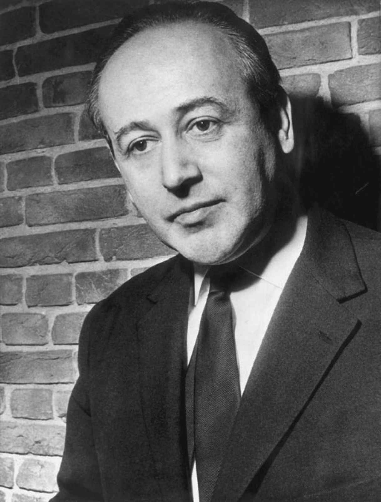
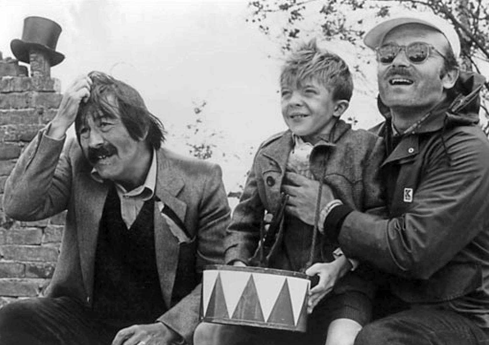

1967年，心理学家亚历山大·米切利希（1908—1982）和玛格丽特·米切利希（1917—2012）发表了《无力哀悼》，分析德国对1945年创伤的集体反应，这是德国历史上的“零点”，过去已经失去，现在是遍地废墟，未来是一片空白。他们的结论是任何反应都没有出现：德国在情感上冻结了，它故意忘记了对第三帝国的巨大感情投资，也忘记了自己和他人付出的可怕代价，以此摆脱那个幻觉。德国已经甩掉了旧的身份，转而与胜利者（无论是西方的美国还是东方的俄罗斯）寻求一致，无忧无虑地投身于重建工作中，还创造出了西方的“经济奇迹”，东德也成为苏维埃集团里最成功的经济体。这篇分析，尤其是它的结论认为，纳粹思想在（西部）德国社会仍然像老纳粹一样无处不在，对1968年的革命一代产生了巨大影响，强调了“胜任过去”是当代文学的主要任务这条公认的智慧。然而需要哀悼的事情还有很多，不仅仅是不被认可的纳粹主义、被压抑的关于纳粹罪行的记忆、轰炸平民的恐怖、军事失败的痛苦，或这个令人不适的事实：从战争结束到1949年两个战后德国建立的四年里，普遍的情绪不是快乐和缓解，而是对盟国和德国流亡者的愠怒不满。除此之外一个更复杂的情况是，要求被重新评估的过去并不是从1933年开始的，它可能和德国本身一样古老，而现在，尽管对重建众说纷纭，却没有一个历史先例。现在可能类似于三十年战争之后，尽管不再有诸侯，但更重要的是也没有资产阶级：两个德国都是工人的国家，只不过一个比另一个更富裕些。但是因为在东德，官僚的绝对统治在“社会主义”的名义下幸存下来，这就为西方的竞争对手打造出一个官僚宿敌的形象，并把联邦德国定性为“资产阶级”的德国。随着1961年柏林墙的修建，这种双重错觉被固定在混凝土和铁丝网上，对隔离墙两侧的德国知识分子的生活产生了越来越恶劣的影响。对现在和过去进行清晰评估的最大障碍没有被米切利希夫妇提及：瓜分德国的世界大国们也不希望鼓励这项评估。相反，它们更希望作为前线的、中间横亘了铁幕政策的两个德国将自己理解为在两极化全球系统中展现各自阵营的橱窗。“非纳粹化”的程序在西德停止了，在东德也被视为无关紧要。直到1990年之后，德国作家们才从这种强制性和误导性的对峙中解放出来，随着他们能够自由地理解德国在全球市场和国家身份早已消失的全球文化中的地位，他们也可以自由地面对自己的历史。
1945年后，很多流亡者留在原地，或避免定居德国。到这时候他们无论如何已经筋疲力尽。返回瑞士的托马斯·曼和继续留在瑞士的黑塞获得了荣誉（黑塞1946年获诺贝尔文学奖），但他们不再积极创作。共产党人返回俄罗斯占领区，但是除了布莱希特外都没有什么国际声誉。阿多诺于1949年回到法兰克福担任教授，1951年社会研究所重新开张。在西部，对创伤性的过去做出文学反应的任务是由新一代人（退役军人和前战俘）完成的，其中的很多人每年开会讨论他们的作品，被称为“四七社”。对这新一代人来说，诗歌中的传承问题尤其明显。阿多诺1949年的著名格言“奥斯维辛之后写诗是野蛮的”，一定程度上反映了抒情诗在德国作为探索个人伦理体验的文学媒介的特殊地位。这个地位已经终结了，这是戈特弗里德·本恩在晚期作品中所强调的，它们在20世纪50年代早期才为公众所知。尽管被纳粹封禁，他仍然偷偷写作。被他称为“静态诗”的作品形式普通，却富含秋天和灭绝的意象。1943年一本私人传阅的诗集收录了他伟大的诗歌之一《再见》，他痛苦地承认他在1933年背叛了“我的话，我的天堂之光”，不可能再安于这样的过往：“经历此事，须忘却自己。”这次个人的呐喊之后，他在战后公开表现出的坚定的虚无主义立场完全是始终如一的：
（《只有两样东西》，1953）
如果自我只是变成纯粹的构想产物，而不是出自与过去的经历或与某个特定世界的互动，那么从歌德到拉斯克—许勒在德国所实践的诗歌就没有了容身之地。向阿多诺表明在知晓奥斯维辛的情况下仍然有可能写诗的诗人当然明白这个训诫。来自罗马尼亚的德裔犹太人保罗·策兰（1920—1970）的作品中没有自我的位置，也没有任何主导性的构想物，他的双亲在死亡集中营中被谋害，他选择在巴黎生活，也在那里自杀。
策兰最出名的作品是深切悲叹犹太人种族灭绝的《死亡赋格曲》，这是收在葱翠丰饶的诗集《罂粟和记忆》中的一块突兀的顽石。但他似乎感觉到，即使是这种非个人化的、重复的音乐结构及其主题意象（“黑色牛奶”、“灰头发”），犹太美人的名字（“苏拉密特”）以及可怕的高潮句子（“死神是来自德国的大师”），也给简直无法想象的事件强加了太多的主观秩序。

图18 1967年的保罗·策兰
在他后来的诗集［（例如《语言栅栏》1959）、《呼吸转折》（1967）］中，他把诗歌看作一条“子午线”，这条假想的线一方面将不同的词语、名称、事件联系起来，另一方面又随意把它们分开，以此追溯20世纪历史毫无意义的、暴力性的并存和不连贯。尽管包括词汇在内的很多元素都是极其个人化的，但这些让人想起织工的人物缩影获得了罕见的公众阐释，其中死者家属的痛苦基本上没有被日益严重的意识形态的分裂污染。
在本恩宣告诗歌的终点是孤独的私人声音的连贯表达时，布莱希特却认为它是个人参与政治后发出的公众声音。无论在联邦德国还是在民主德国，他都是对诗歌产生最大影响的人，但是这影响和政治参与一样模棱两可。布莱希特于1947年回到欧洲，被美国人禁止进入西部地区，于是定居东部。他在那里获得了一家剧院和特权地位，成为共和国文化桂冠上的宝石。虽然他没有公开反对1953年对工人罢工事件的军事镇压，但他写下了一系列讽刺性的格言诗，表明自己与此次行动保持着距离（也许政府应该重新选择自己的国民？）。或许是为了替宫廷诗人的地位辩护，他强调了文学愉悦的社会价值。无论是布莱希特最后这种简练的风格，还是他早期东拉西扯的诗歌，都让后来的诗人们学会用直接且常常是轻巧的方式来对待公共的争议事件。但是他与东德政府和解，既未能揭示关于德国“古典主义遗产”文化传承的虚假声明，也未能指出它与第三和第二帝国的官僚系统具有制度上的连续性，这形成了一个不好的先例。即使是下一代最有天赋的西德诗人汉斯·马格努斯·恩岑斯贝格尔（生于1929年）也盲从于这一设定：被他的讽刺焰火点燃的联邦德国国内生活的矛盾和满足在某种程度上是左派和右派世界分裂的产物。对他来说（也对我们所有人来说），现代化意味着要承受这两个敌对体系的热核武器互相破坏的威胁。因此他写了一首与布莱希特的《致后辈》相反的诗，开头就把冷战和在1989年已鲜有谈论的第二次世界大战相提并论：
对比之下，策兰对布莱希特诗歌的改写更接近德国被过去困扰的当前困境的核心。他明白，诗歌需要语言和记忆的净化，不需要罗列了可接受主题的处方：
（《一叶》，1971）
在戏剧领域，布莱希特当然也是无处不在的。他返回德国后，没有再写出重要的作品，但是在与柏林剧团合作的十年里，他创造出一种现代主义的模板：政治教育剧。它起初对坚决维持第二帝国演剧传统的东德戏剧影响甚微，却在西德（特别是1968年之后）赢得了巨大权威，可以在批判的距离下隐藏与文学遗产直接接触的缺乏。然而，制度上的连续性几乎没有中断，1918年德国剧院在浩劫中幸存下来，之后20年没有出现重要的新剧作天才。即便如此，分配给新一代制作人和作家的任务仍然一如以往（除了1914年前短暂的资产阶级时代）—剧院是一个国家机构，知识精英可以通过艺术完善公民（或臣民）的道德。罗尔夫·霍赫胡特（生于1931年）的戏剧不否认它们对席勒的传承。他的五幕剧《代理人》（1963）谴责教皇庇护十二世是欧洲犹太人大屠杀的共犯，使用无韵诗的形式，集中探讨个人的道德责任问题。霍赫胡特决心找到身居高位的人，为这滔天罪行指责他们［如《士兵们》（1967）里的丘吉尔、《律师们》（1979）中的巴登—符腾堡州州长汉斯·费尔宾格］，此举有时非常奏效（费尔宾格因此被迫辞职）。可是这样还不能帮助人们更广泛地理解罪行的历史和文化背景。道德进步看起来不像是彼得·魏斯（1916—1982）第一部极具娱乐性并大获成功的戏剧的目的，他是一名犹太移民兼共产主义者，1939年起定居瑞典。这部题为《圣莫里斯医院剧团演出的德·萨德先生导演的对让·保罗·马拉的迫害和谋杀》，通常被简称为《马拉/萨德》（1964）的剧中充斥着色情、暴力和疯狂，在幻觉和现实之间滑行，歌曲和自我意识的影响中有布莱希特早期的风格，并涉及他的一个主题：孤僻的享乐主义者萨德和非个人的集体革命行动的捍卫者马拉之间的冲突。不过魏斯本人认为这是一部马克思主义戏剧，他的下一部著作要冷酷得多：《调查》（1965）是一部纪实剧，援引了不久前在法兰克福进行的对奥斯维辛部分工作人员的审讯记录。他选材的依据是布莱希特戏剧对第三帝国的论述：可以用大资本企业的逻辑来解释希特勒。魏斯的思想形成于20世纪30年代，对德国人自我理解的贡献微乎其微。他最后的三卷本作品是小说《抵抗的美学》（1975—1981），它重申了在战争年代中造成如此巨大伤害的谬论：“教化”的意义超越了历史，在德国的阶级结构中没有特别的基础。相比之下，在德意志民主共和国，作为柏林剧团领导人的海纳·米勒（1929—1995）把他对总是被国家背叛的人道社会主义的强烈需求与被自己发挥到后现代主义极致的布莱希特的做法结合起来，创作出特别有力的作品，常被东德当局嫌弃说得太多，他与联邦德国里盛行的“扶手椅左派” [24] 毫无共同之处。一部以《日耳曼尼亚：魂断柏林》（1977）开篇、以与其互文的对照诗《日耳曼尼亚：死人身边三个鬼》（1996）结束的松散组剧是民主德国的一曲悲歌，米勒把身体、语言、历史统统塞进绞肉机；满篇食人、肢解和性变态；戏剧的惯用风格被拉伸到极限，并超越了极限；普鲁士军国主义、纳粹主义和斯大林主义对德国现代国家的形成所造成的影响被残暴地表现出来。这些戏剧中有放纵不羁的真实哀悼。然而，由于其基本假设是德国历史的真正受害者是社会主义，它们又是走错了哀悼会的吊唁者。
至于叙事文方面，在两个共和国的对峙加强之前，最敏锐的见解是在德国分裂开始之时浮现的。海因里希·伯尔（1917—1985）的很多佳作是他在战后几年写下的幻灭且低调的短篇小说：军事混乱和失败，毁坏的城市和生活，黑市、饥饿和烟草。《流浪者，你若去斯巴……》（1950）是一位身受重伤的高中毕业生的内心独白，他被送进做紧急手术的战地医院，而这里原是他几个月前刚刚离开的学校。他看到自己亲笔写在黑板上的西摩尼得斯赞颂温泉关战役的格言诗的残句，认出了这间教室，这段简练叙事的大部分文字都是在列举散落在走廊上的文化用品—恺撒的半身像、弗里德里希大帝和尼采的肖像画、北欧种族类型的插图。在残酷的缩影中我们看到“教化”满身血污地垮台。伯尔对纳粹如何感染德国政治躯体的最雄心勃勃的调查是小说《九点半打台球》（1959），它跨越了从19世纪末到1958年的大段年月。一个建筑师家庭的三代人参与了一家本笃会修道院的历史：祖父建造了它；父亲在第二次世界大战中借口名义上的军事需要炸毁了它，但实际上是因为他知道它已被纳粹污染；儿子正在重建它，不知道该由谁为其破坏负责。小说围绕这个主题编织了一幅社会图景，曾经的罪犯、他们的受害人和他们的敌人被混杂在一起，一会儿是平等的，一会儿又不是，但通常都处在不公正的关系中。在阿登纳时代，伯尔也是一位信仰天主教的莱茵省人。教会因其在战争期间的行径以及在新的天主教主导的西德与财富和权力的联系而丢尽颜面。伯尔似乎把自己视为教会的道德良知。但是在他后期的作品中，遵照外部的正义标准定义德国历史的意识淡化了。他批判的目标变得更加世俗化，立场变得更简单，即站在社会党人的一边反对基督教民主联盟党［例如《丧失了名誉的卡塔琳娜·布罗姆》（1974）］。伯尔仍然对现代主义的技巧兴趣盎然，比如多重、不确定或不可靠的叙述角度，但在《九点半打台球》中已经可见的沉闷的象征和示范性的道德变得更加明显，丧失了原先对国家生活独特时刻的强烈追踪意识。
君特·格拉斯（1927—2015）走过的道路与伯尔相似，伯尔在1972年即获得诺贝尔奖，而格拉斯更多地是一个令人头痛的天才，不得不等到1999年才获奖。格拉斯是一位诗人、剧作家、画家和多产的小说家，但首先让人铭记的是他的《铁皮鼓》（1959），小说讲述了奥斯卡·马策拉特的生平。他和格拉斯一样，在德国和波兰交界的但泽开始他的人生，在三岁那年决定停止生长，仅依靠一面铁皮鼓和可以击碎玻璃的歌喉，行径猥琐又看似刀枪不入地穿越第三帝国的荒诞恐怖，最后被监禁在联邦德国的疯人院里撰写他的回忆录。这部小说以丰富的非道德描述从格拉斯或其他人关于纳粹时期所写的一切中脱颖而出。那些成年人热切渴望摧毁彼此和他们所喜爱的事物，奥斯卡至多是暂时被此迷惑。非道德性至关重要，因为它反映了正被描述的行为和行动者的本质。此外，面对书中毫不回避的一切邪恶和死亡，同样丰富的还有生命和快乐的价值—部分受德布林启发的口语创新性代表了坚持不懈的抵抗。不过，《铁皮鼓》之所以能够特别有力地分析德国灾难如何发生的问题，关键在于它与德国文学传统的暧昧关系，特别是讽刺性地模仿了自上一次同样可怕的灾难（即三十年战争）以来的传统。格拉斯回顾格里美豪森的《痴儿西木传》，以找到一个叙述的立场，来概括以纳粹主义为终点的政治发展和以奥斯卡·马策拉特为终点的文学发展。从拉斯普金的传记和歌德关于个人成长的小说《威廉·迈斯特》（它自第二帝国时期起被视为“教化”的源头）中，奥斯卡学会了阅读。《铁皮鼓》这部小说显示，歌德和拉斯普金也可以在德国20世纪的历史中奇异地携手并进。从个人成长的理念开始，每一个“教化”的惯例都被推翻，事件的进程似乎不是由自然或精神，而是由一个嗜血的躁狂分子决定的。在格拉斯后来的作品（即使是被英国学者约翰·雷迪克称为《但泽三部曲》中的两本）中，创造力变得或狡黠或生硬起来，并且主题趋向政治正确而失去了紧迫感（例如1977年的《鲽鱼》）。柏林墙不仅使德意志民主共和国，也使联邦共和国变成了一个更加闭关自守的地方，为了保护公众生活免受巴德尔–迈因霍夫集团的左翼法西斯主义之害，也许也是受托马斯·曼的例子启发，格拉斯成为社会民主党一位可靠且重要的活动家，同时对他的世界的分析变得不再那么锐利。

图19 《铁皮鼓》：君特·格拉斯（左）、大卫·本奈特（手持铁皮鼓扮演奥斯卡·马策拉特）和沃尔克·施隆多夫（导演）1979年在但泽拍片期间
阿诺·施密特（1914—1979）的大部分作品都是在20世纪50年代完成的，从1958年起，他在下萨克森的乡村过起了（已婚且无神论的）隐士生活，因此他与上述地方性的难题隔绝。部分得益于他的博学，他保持了对德意志民族更广泛的认知。《铁石心肠》（1956）在次要情节中讲述了造成当代分裂的早年创伤—独立公国（此处是汉诺威王国）被纳入俾斯麦的帝国，以此为对照铺陈出一幅关于两个现代德国的并不美好的画面。《学者共和国》（1957）是施密特创作的一则关于冷战的科幻寓言，这是德国身份的另一次更大规模的罗列，时间设定在第三次世界大战之后，此时德语已经是一门死去的语言。施密特在风格、拼写和标点应用上的怪癖显示了他与同代人的故意隔离，而不应该简单被认定为对乔伊斯的模仿，尽管他的集大成之作《纸片的梦》（1970）—一千三百多页A3纸，每页分多栏，重量超过一块大石头—从乔伊斯的《芬尼根的守灵夜》中受益良多。
乌韦·约翰逊（1934—1984）选择了不同的方式来保持他的独立性和写作能力，他在1959年从东德迁往西德，20世纪60年代的大部分时间旅居国外，1974年定居英国。他创造了一种叙事方法，其中没有任何有特权的叙述者，而是将话语的碎片蒙太奇式地拼接在一起，应用大量的报纸材料：他笔下人物的生活，以及他们与对他们产生深刻影响的主要公共事件的关系中没有单一的事实。《对雅各布的种种猜测》（1959）描述的是在匈牙利起义和苏伊士危机发生时，一个“在西方是异客，在东方也不再有家”的男人死亡之际的阴暗环境。《关于阿齐姆的第三本书》（1961）则追问，跨越从纳粹年代到东德的分水岭，是否还存在人格上的连续性。他没有找到答案。《对雅各布的种种猜测》提出的以人的面貌出现的社会主义的可能性，是四卷本《周年纪念日》（1971—1983）的一个中心主题，它追踪同一批人物从1967至1968年的每日生活，穿插着德国的历史、美国的现状和布拉格之春的结束。与这些力量十足的书相比，克里斯塔·沃尔夫（生于1929年）在叙事的不确定性上所做的实验似乎相对平淡，她留在德意志民主共和国，加入了党派层级和文学官僚体系。《追思克里斯塔·T》（1968）尽管跨越了和《关于阿齐姆的第三本书》同样的时期，但几乎没有显示对人格的社会成分的意识。不过，她的自传《童年模板》（1976）令人印象深刻地表现了纳粹童年的幻觉，及其对后期写作立场的过渡具有怎样的创伤性效果。
自1945年以来，德国人面临的描写德国人的挑战，在于将创伤转化为记忆，并经由哀悼过去来理解现在。为了描述不可描述之物，他们必须通过讲述足够广泛而深入的故事来显示什么是德国的。1961年之后，这一挑战变得更加困难，只有叙事能够涵盖强加给德国以经济、社会和文化精神分裂症的世界权力关系的作者才有成功的机会。只有依靠坚定的国际观或历史观才能抵抗造成德国分裂的巨大谎言催眠般的吸引力：民主共和国号称是一个自由工作以期实现社会主义的国家，而事实上正如柏林墙所宣告的，它并没有摆脱靠外国军事力量维持的老式官僚专政。这样的观点在哲学中比在文学中更容易获得。海德格尔和云格尔或许在后期仍不知悔改的作品中做到了，即使是基于错误的理由。阿多诺因为继续坚持“教化”而受到残酷的惩罚，他被学生羞辱为反动派，很可能因此导致他在1969年死于心脏病；但是“法兰克福学派”的传统由他的学生尤尔根·哈贝马斯（生于1929年）继承下来，并坚决予以扩张。哈贝马斯发展出一套民主论证的演变理论，以寻求德国哲学和英美传统的结合（被阿多诺拒绝）：启蒙在民主体制中体现为制度（《交往行为理论》，1981）。由此，他既将联邦德国的宪法秩序与其他西方国家的宪政秩序联系起来，又将其与德国的过去严格分开。他担心赫尔穆特·科尔的政府依然在鼓励一种以西德爱国主义面貌出现的民族主义形式，它会抹去联邦德国和以前的德国之间的区别，他在1986至1987年对粉饰犹太人大屠杀的修正主义历史学家的批判（史称“历史学家之争”）中表达了这一担忧。可是科尔只自觉地关心德国也应该悼念第二次世界大战中1100万德国人的死亡：只有承认第三帝国的全部代价，才可能真正评估第三帝国。
随着1989年苏联撤出对东欧政府的军事保护，这些政权相继崩溃。在东德，官僚绝对统治的残余和整个民族30年的虚假认识不复存在。人们很难期待像克里斯塔·沃尔夫那样已经在空心的基石上重建过一次生活的人能在第二次创伤后再度重建自己。但是对公认的西方作家和东方的年轻作者来说，诚实的新高度有望达到。《辽阔的原野》（1996）是格拉斯对科尔处理统一的方式的愤怒批评，与其说是一部小说，不如说是一项政治干预；之后，他的《蟹行》（2002）重新采用了旧的形式，中心情节是1945年人们在苏联军队抵达前夕逃离东普鲁士，救生船被鱼雷击中造成九千多人丧生。格拉斯在2006年的自传中承认自己曾为纳粹党卫军服务，这也显示，他的奥斯卡·马策拉特的形象比任何人在《铁皮鼓》首版时所能想到的更加接近现实。2005年，屡获嘉奖的诗人杜尔斯·格仁拜因（生于1962年）尝试着手描写所有盟军战争恶行中最臭名昭著的一桩—德累斯顿大轰炸，从一个土生土长的德累斯顿人的视角出发，将本城的政治和文化历史、它与纳粹的关系，以及它的惨淡重建一并囊括：语调的不协调是本诗必不可少的要素，却带来了多元的接受可能（《瓷器—我的城市毁灭之诗》）。德国无力悼念针对其城市的可怕轰炸一直是温弗里德·格奥尔格·泽巴尔德（1944—2001）一项争议性研究的主题：《空袭和文学》（1999）本身就是禁忌正在被打破的标志。泽巴尔德的小说是20世纪90年代德国文学中最引人注目的，它们既毫不动摇又不拘一格地关注对历史暴力的记忆过程，这个过程正如我们在《移民们》（1992）中看到的，一具在山腰被积雪掩埋的尸体最终会在多年以后在冰川脚下浮现。和乌韦·约翰逊一样，长期担任东英吉利大学教授的泽巴尔德也不得不在德国以外的地方定居，以使自己的文学工作所必需的记忆保有自由和广度。他的故事从冰雪中找回生命和死亡，在全世界有广泛影响。虽然德国的灾难通常是或明显或隐蔽的参照点，但他的作品极为详细地表现了无数看似不相关的主题和地点：伊斯坦布尔和北美、各座火车站的建筑、丝绸产业的历史和托马斯·布朗爵士的作品。德国似乎相当接近《土星之环—英国朝圣之旅》（1995）里所描绘的情况，正如标题所暗示的，这本书涉及大英帝国世界历史性的内爆之后的模式。泽巴尔德通过故意模糊文学类型—我们读的是小说、自传、历史还是纪实文献？散落在作品中的模糊不清的照片是真实的还是合成出来的？它们和文本有关还是无关？—一方面复制了遗忘的层次，人们必须向下挖掘才能抵达过去；另一方面再现了我们正试图恢复的、总是规避统一的多样性。只是，他的书有一点是统一的：它们完全属于德国。精致平和、清晰均衡、精心雕琢的句子，除了少量几乎不引人注意的关于20世纪的描绘外，可能让人以为出自歌德之手。正是这些特征告诉我们，这种对于我们当前状况的观点，尽管触及全球，仍然是从特定的历史和文化立场出发获得的—一个悲剧的立场，因为它是德国的，也因为其他任何语言都没必要也不可能让泽巴尔德写出他最伟大的句子：他的最后一部小说《奥斯特里茨》（2001）对特雷津集中营长达10页的描写。他的作品是一个明确的信号，标志着自1989至1990年的转折起，德国文学重新开始了战后对民族历史身份的原始追寻，这是对我们所有人都很重要的追寻，不仅因为每个国家都必须以相似的方式在一个联系日益紧密的世界体系中寻找自己的位置，而且因为德国的例子特别清晰地表明，最终最重要的不是国家或个人的身份，而是对正义的追求。